Introduction
Our scene is looking great with the baked texture, but we are not really using the full potential of WebGL. Let's add more details and give more life to the scene.
First, we are going to add fireflies floating around. Then, we are going to create a cool animation inside the portal. But first, we need to change that black background.
Setup
The code is exactly the same as we left it in the previous lesson.
We have our scene already imported in Three.js, we can rotate around with the OrbitControls and we have our Dat.GUI instance ready.
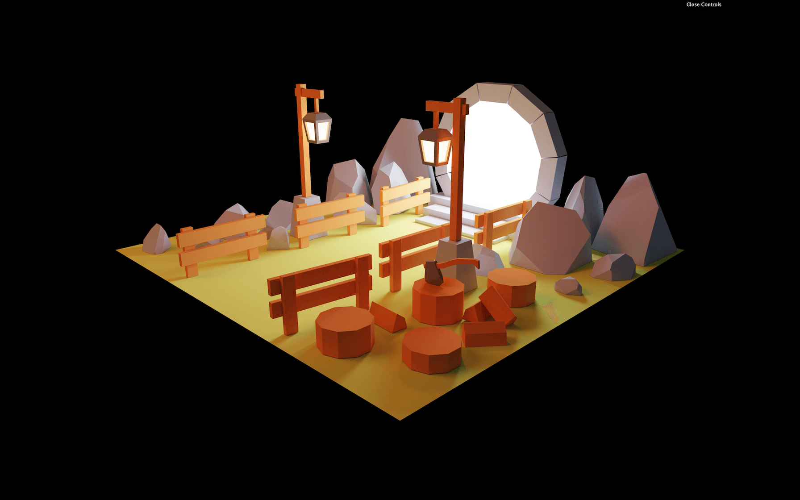
Background color
For the background, we are not going to make something too fancy. We will simply change the color to something that matches our scene a bit more. To find the perfect color, we are going to add a tweak to Dat.GUI.
Right before creating our Dat.GUI instance, add a debugObject:
Like we did in the previous lessons, this object's purpose is only to store the color as a property so that we can add it as a tweak to Dat.GUI.
After instancing the renderer, add a clearColor property to the debugObject object:
Then add it to the tweaks of Dat.GUI using gui.addColor(...):
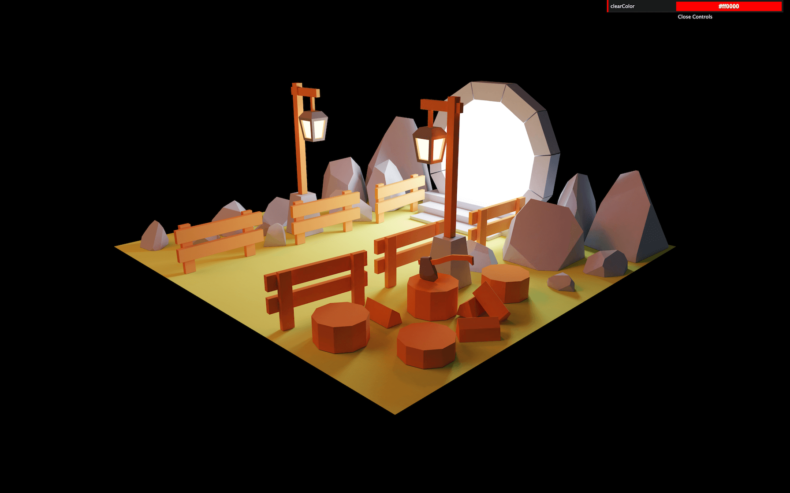
You should see the color tweak but we are not using it yet.
Use the value to change the background color with renderer.setClearColor(...):
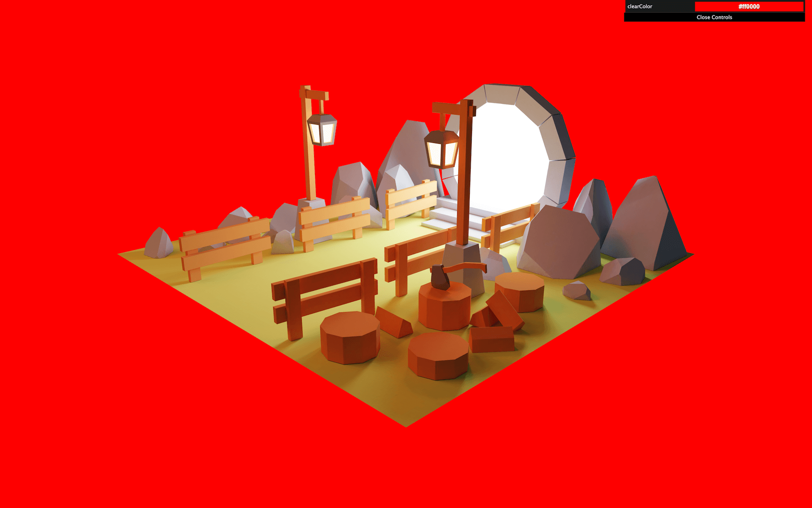
Unfortunately, changing the tweak won't change the color of the background because we are only changing the clearColor property.
We need to call the renderer.setClearColor(...) again when the tweak changes:
You can now find the color that matches your scene the best:
Fireflies
To create the fireflies, we are going to use particles with a custom geometry.
Base
Start by creating an empty BufferGeometry:
Create a BufferAttribute named position to set the position of each particle:
The positions of the fireflies are random, but we will improve their positions once we can see the fireflies.
We are going to use a PointsMaterial in order to see our fireflies, but we will change it to a custom ShaderMaterial later:
Create a PointsMaterial with a size of 0.1 and set the sizeAttenuation to true:
Finally, create the Points instance using the firefliesGeometry and the firefliesMaterial and add it to the scene:
You should see some big square particles.
Let's change the positions so that it fits in the scene:
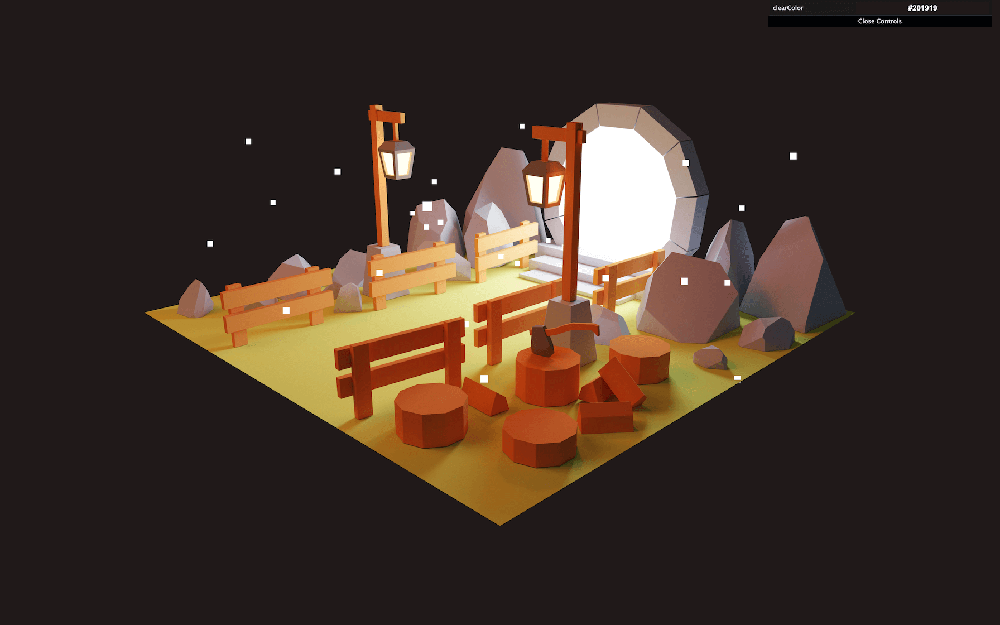
The particles shouldn't go too far on the x and z axes and stay above the floor on the y axis.
Custom shader material
We can now change the material to a ShaderMaterial in order to animate them but also draw something other than those ugly squares.
- In the
/src/folder, create ashaders/folder. - In that
shaders/folder, create afireflies/folder. - In that
fireflies/folder (hang on), create avertex.glsland afragment.glslfile.
You can try to write those shaders on your own.
Here's the code for /src/shaders/fireflies/vertex.glsl:
This code isn't doing anything special. The vertex get positioned where it should be by applying the various matrices. We also added the gl_PointSize to control the size of the particles.
Here's the code for /src/shaders/fireflies/fragment.glsl:
As with the vertex shader, this code isn't doing anything special and the particles should look red.
We can now import those shaders into our script:
The rule to load .glsl files has already been added to the Webpack configuration. firefliesVertexShader and firefliesFragmentShader should contain the two shaders we wrote.
Replace the PointsMaterial by a ShaderMaterial with the vertexShader and fragmentShader properties:
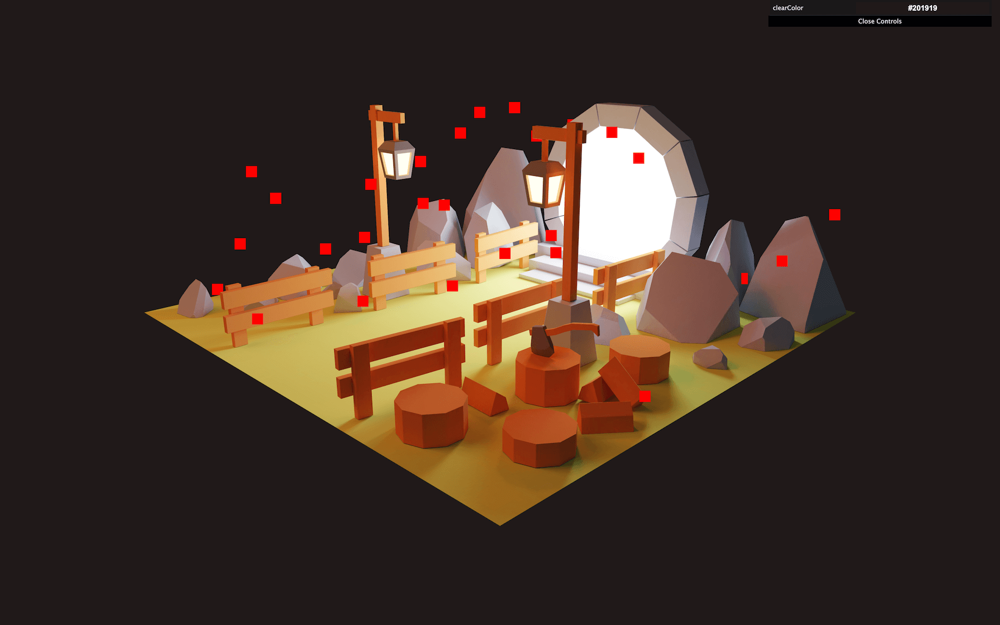
You should get red squares as the fireflies.
Point size
Those squares might look bigger on your screen and this is due to the pixel ratio. In our vertex shader, we wrote gl_PointSize = 40.0; which means that each particle will take 40 pixels of the render in width and height, but if you have a high pixel ratio screen, 40 pixels will look smaller because you have more pixels in the same space.
To fix that, we can send the pixel ratio as a uniform:
We are not using renderer.getPixelRatio() because the renderer is being declared afterwards. Doing it this way would result in an error. But if you prefer, you can move the entire fireflies code to after the renderer.
We can now retrieve the uPixelRatio uniform in the vertex shader and multiply our gl_PointSize by it:
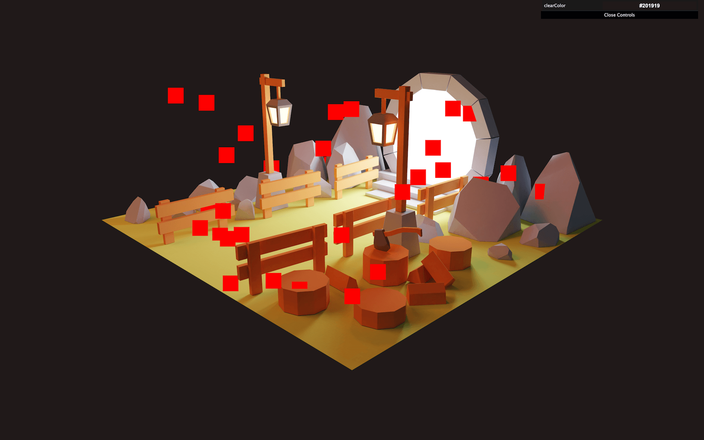
You should now see the same particle size regardless of the pixel ratio of the screen.
We might have a problem if the user changes the window from one screen to another one with a different pixel ratio. Fortunately, most of the time, when a user does that, he is also resizing the window so that it fits better. This is why we can simply update the uniform in the resize callback function:
Another problem with our particles is that the size of the squares is the same regardless of the distance. We need to activate the size attenuation and we can do that with the following code:
The particles' size should now depend on the distance to the camera.
Finally, we can create a uSize uniform to control the size of the particles:
Use it in the shader:
And add a tweak to control it:
Firefly pattern
It's time to change those red squares into better looking fireflies. We are going to create some shiny points to represent them.
We could have used a texture and it's actually more performant to do that. But, for the sake of this lesson and to have more control over the pattern, we are going to draw it in the fragment shader.
Increase the particle size to something like 200. Start by showing the UV coordinates of the point with gl_PointCoord:
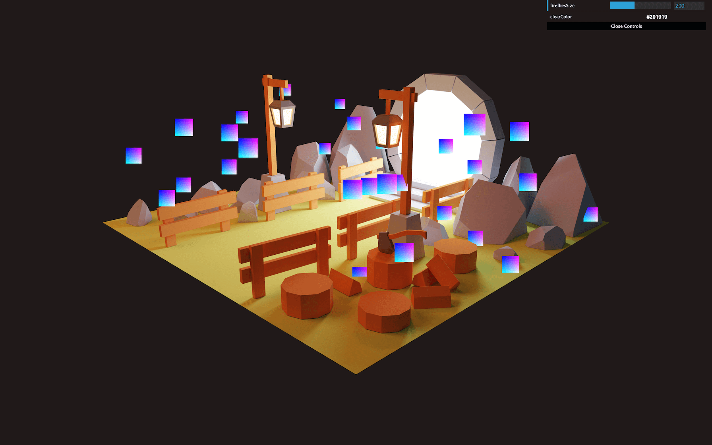
We are going to use these coordinates to draw a shiny point at each center.
First, we know that we need to play with the value which contains the distance to the center of the coordinates.
Create a distanceToCenter variable and calculate the distance between the center (vec2(0.5)) and gl_PointCoord:
Use this distanceToCenter variable as the alpha of gl_FragColor:
The particles are all white even though the alpha was supposed to change. This is because we forgot to set the transparent property of the material to true:
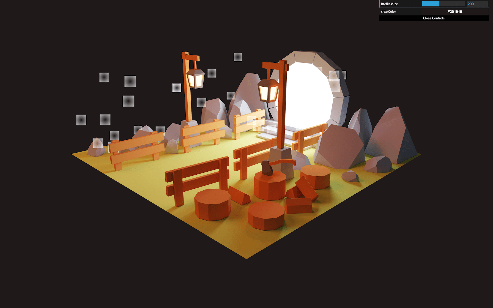
We can now see our pattern through the alpha.
Next, we will try to create a shiny pattern. To do that, we can start with a very small value and divide it by the distanceToCenter.
Create a strength variable, divide 0.05 by distanceToCenter and send it to the gl_FragColor:
They look good, but unfortunately, we can see the edges. This is because this formula gets very low with distance but never reaches 0:
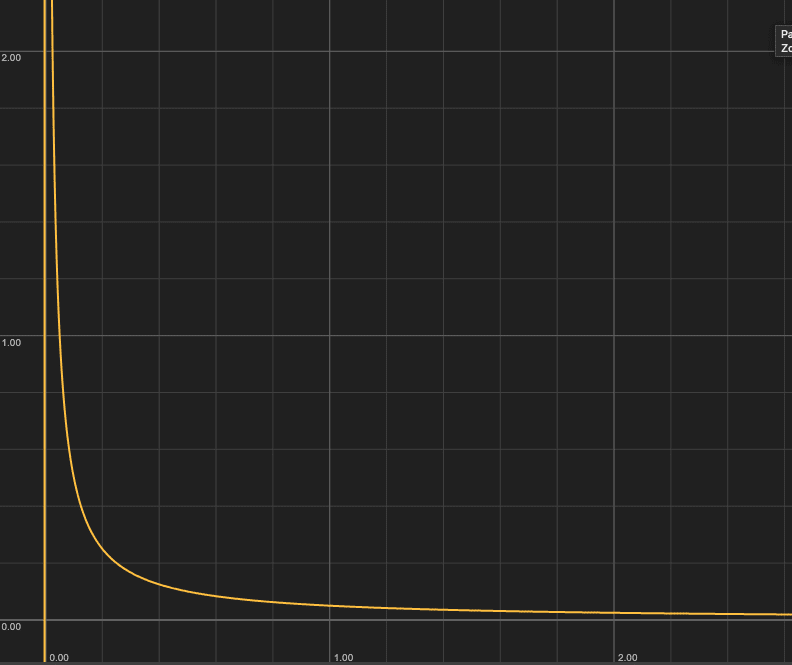
To fix that, we can subtract a small value but big enough to make sure that the result goes below 0.0 before reaching the edges:
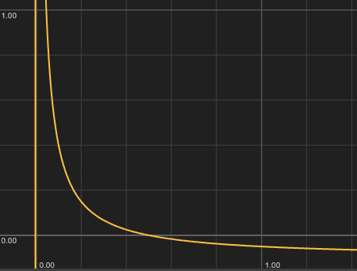
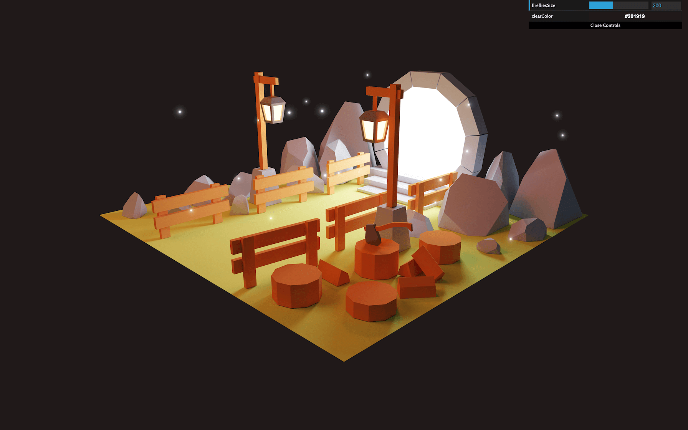
The fireflies now look like little points of light.
Scale randomness
When creating something organic, it's always good to add randomness. So far, all the fireflies have the same size.
We are going to send a different scale multiplier to each one.
Create an aScale attribute and fill it with random values using Math.random(). We only need 1 value per vertex, so make sure to get the Float32Array length right and also set the second parameter of the BufferAttribute to 1:
We can retrieve the attribute in the vertex shader and use it in the gl_PointSize formula:
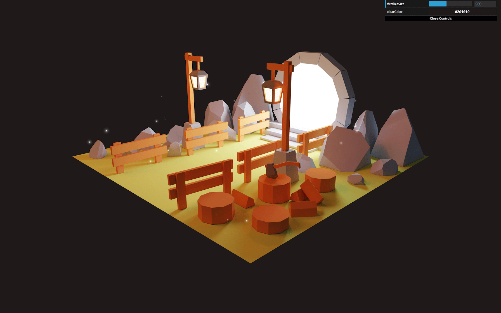
The fireflies now have different sizes.
Blending
To make them even more shiny and look like points made from light, set the blending property of the material to THREE.AdditiveBlending:
Depth write
At some specific angles, you will notice some clipping issues where one particle seems to hide the one behind. This is true even if the alpha is supposed to be set at a low value.
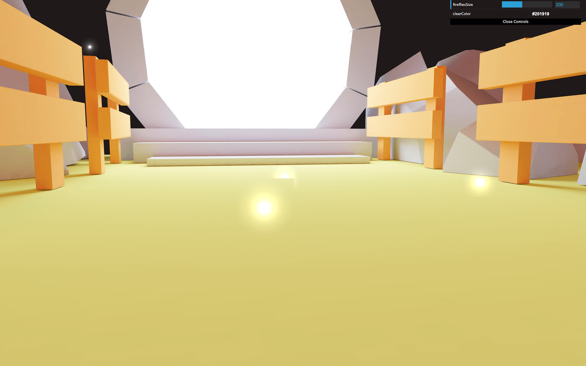
To fix that, we can deactivate depth writing by setting the depthWrite property to false on the material:
Floating animation
Finally, we want the fireflies to float up and down to give them more life.
Because we are going to do the animation in the vertex shader, we need to send it the time.
Create a uTime uniform and update it in the tick function by using the elapsedTime variable:
Retrieve the uTime uniform in the vertex shader and update the modelPosition.y using sin():
That's a good start but we need to add some randomness. First, let's de-synchronize them.
We could have sent a new attribute, but instead (since they only move on the y axis), we can use the x axis to offset the value in sin():
The animation looks more random, but we also need to randomize and reduce the amplitude.
We can use the aScale so that the smallest fireflies move less. We can also multiply by a small value to reduce the general amplitude:
That's it for the fireflies but you can go further by adding more tweaks to Dat.GUI, improving the pattern, or maybe sending a color using a uniform.
Portal
The final piece of our scene is the portal. We are going to draw something that looks better than this uniform color.
Custom shader material
We can start by changing the portal material to a ShaderMaterial.
In the /src/shaders/ folder, create a portal/ folder.
In that portal/ folder, create a vertex.glsl file and a fragment.glsl file.
Again, you can try to write those basic vertex and fragment shaders on your own.
Here's the code for /src/shaders/portal/vertex.glsl:
Here's the code for /src/shaders/portal/fragment.glsl:
We are placing the vertices where they are supposed to be and we are setting the color to a uniform red.
We can now import those shaders into our script:
Replace the MeshBasicMaterial by a ShaderMaterial with the vertexShader and fragmentShader properties:
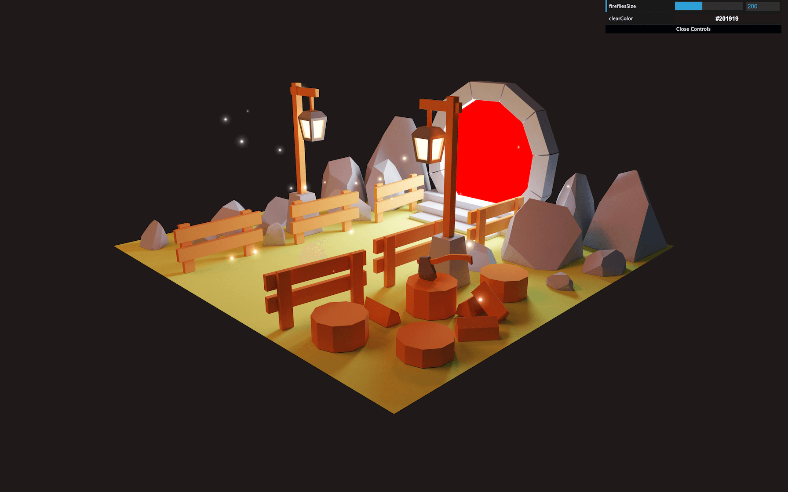
You should get a red portal which doesn't match the rest of the scene, but we are going to fix that.
As in the Shader Patterns lesson, we are going to use the UV coordinates to draw on the portal.
Send the UV coordinates from the vertex shader to the fragment shader using a vUv varying.
The vertex shader:
The fragment shader:
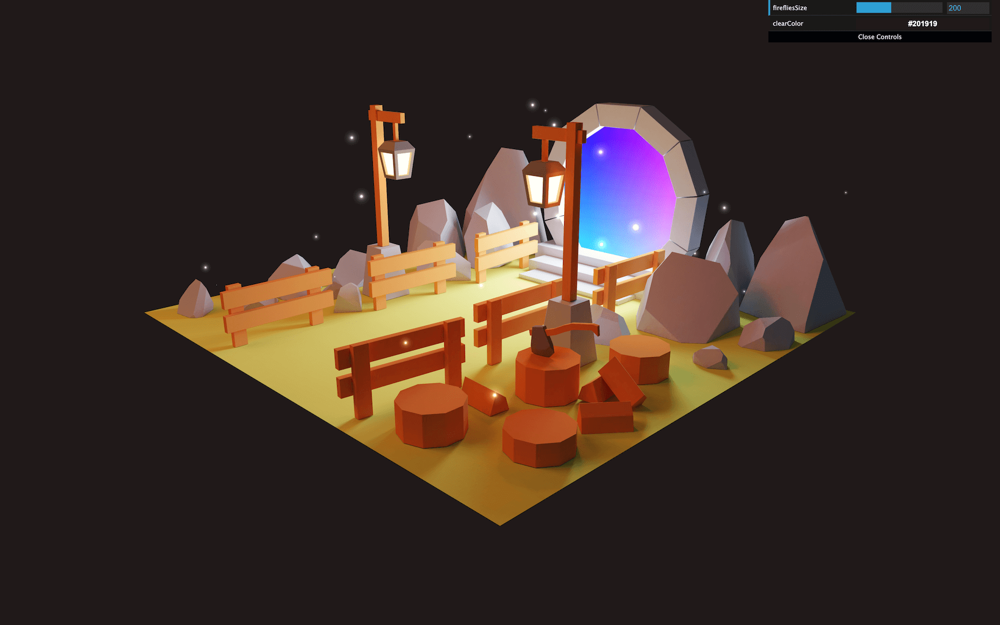
If you are using your own model and you don't get this gradient, it might be because your portal hasn't been unwrapped properly.
Fix the UV coordinates
To fix that, open your .blend file:
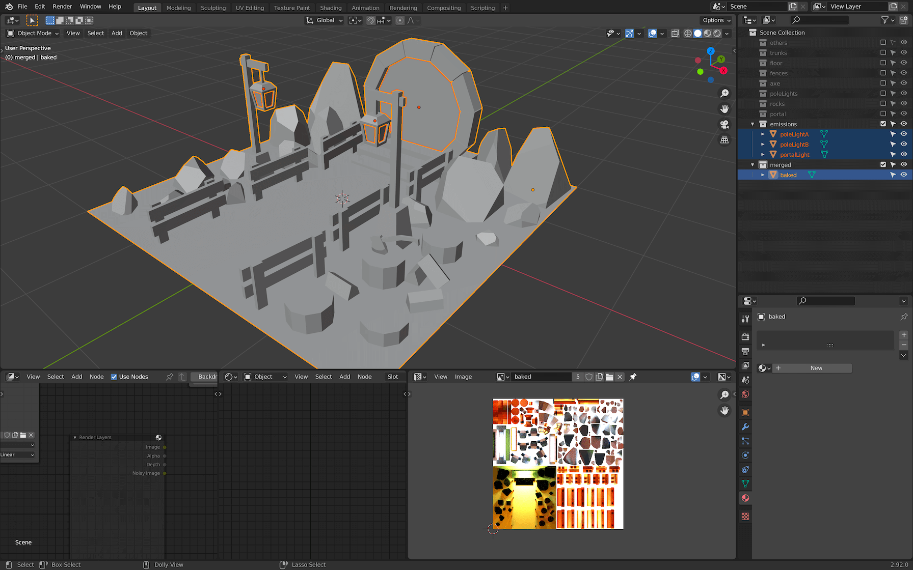
Select the portal only:
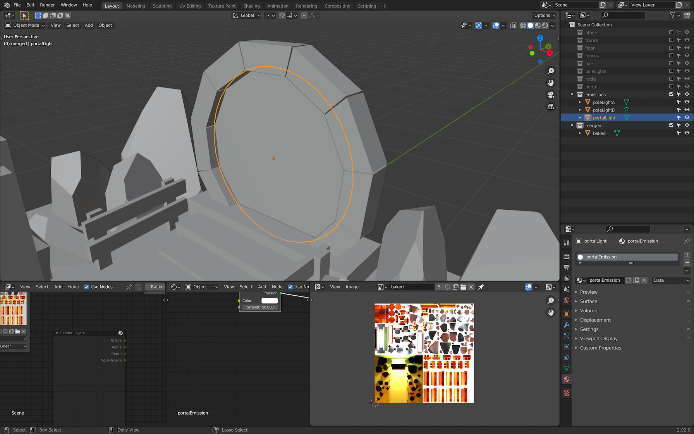
Go into Edit Mode, select all the faces and check how the UV is being unwrapped in the UV Editor:
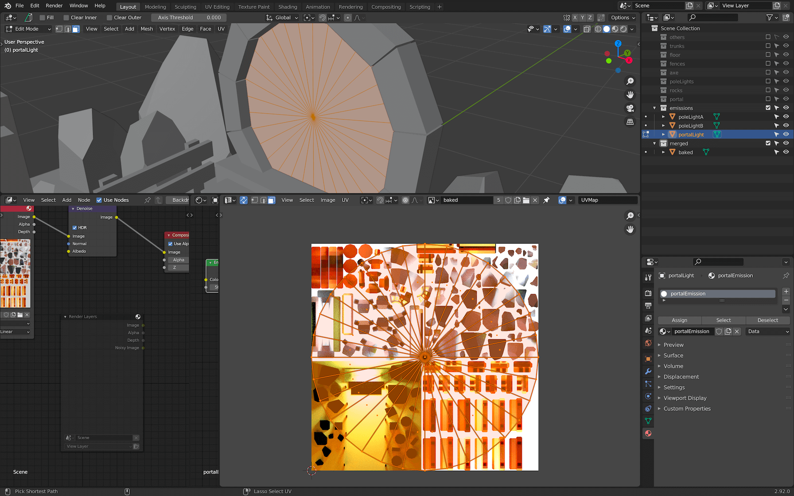
Here, the unwrap is good, but you may have a different result or maybe nothing at all.
Don't worry about the baked texture in the background of the UV Editor. We don't need to be concerned with it. All we want to do is to unwrap the disc-shaped portal so that it fills the whole map.
To do that, while still in the UV Editor with all the faces selected, press U and choose Unwrap.
And that's all. We don't really care about the rotation of the UV because the pattern we are going to draw will be circular.
Leave the Edit Mode and select the merged object and all the emissions. Then, export everything as portal.glb into the /static/ folder:
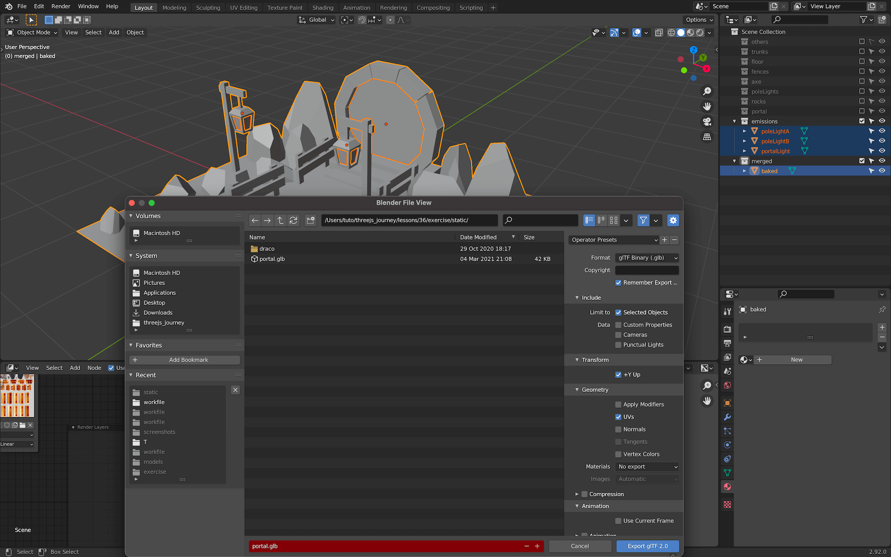
Refresh your scene, and you should now have the same gradient:

If the gradient isn't oriented the same, it's not a problem. Our pattern will be circular.
Perlin
Now comes the fun part. You can draw anything you want in the portal, as long as you find the right formula.
The following steps lead straight to a pleasing result. But, obviously, it was a long process of trying many things until it ended up looking good. Do not be frustrated if it takes you hours when doing it on your own. It's all about time and practice.
We are going to start with a classic Perlin noise. In this example, we are going to use a 3D one, so we can animate the third value with the time in order to create variations to the noise.
Take the following function made by Stefan Gustavson, which is available in this gist, and add it to your src/shaders/portal/fragment.glsl file:
At the end of this process, we are going to display a mix between two colors, but for now, we are going to focus on just one variable.
Create a strength variable and use the cnoise function we just added.
This function needs a vec3 as parameter. For now, we will use the vUv as the x and y and we will use the time variable later for the z:
If there is no error, send the strength to the gl_FragColor:
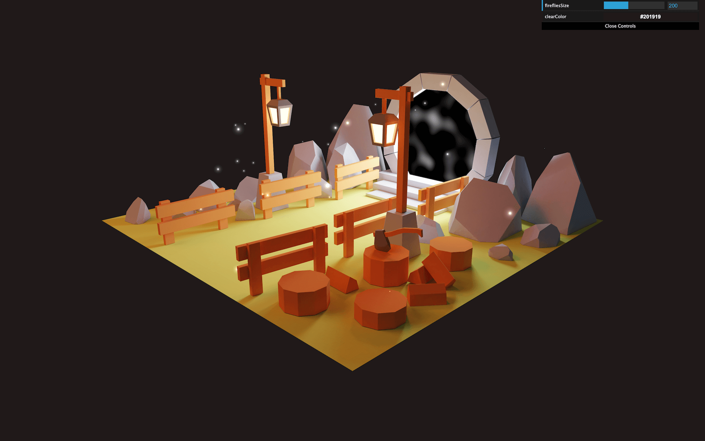
That's a good start and we can see the Perlin noise.
In your JavaScript file, create a uTime uniform and update it in the tick function like we did with the fireflies:
Retrieve it in the fragment shader and use it as the third value of the vec3 that we send to cnoise:
We are already getting some Stargate vibes.
This classic Perlin noise is good, but we can get something even better by displacing the UV coordinates. We are going to create new UV coordinates based on the initial ones, but we are going to offset the x and the y by using another Perlin noise:
The animation is great but a little too fast. In order to slow it down and get some organic randomness, multiply the uTime by small values that are different for displacedUv and for strength:
Outer glow
We are on the right path, but the main concern now is the junction between the portal itself and the bricks around it. The junction between them should be totally white.
We need to create an outer glow. To do that, we start by finding the distance to the center and displaying the result in the gl_FragColor:
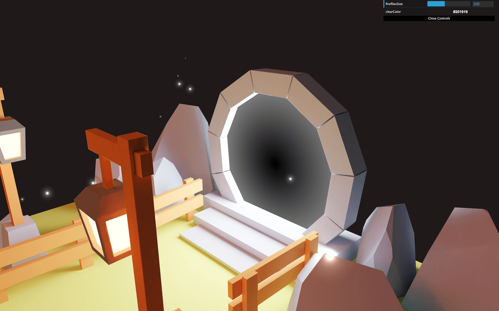
The gradient is the one we want, but we need to push the value at the edges in order to make sure that the gradient is totally white when we reach those edges. To do that, multiply and offset the value until you are satisfied:
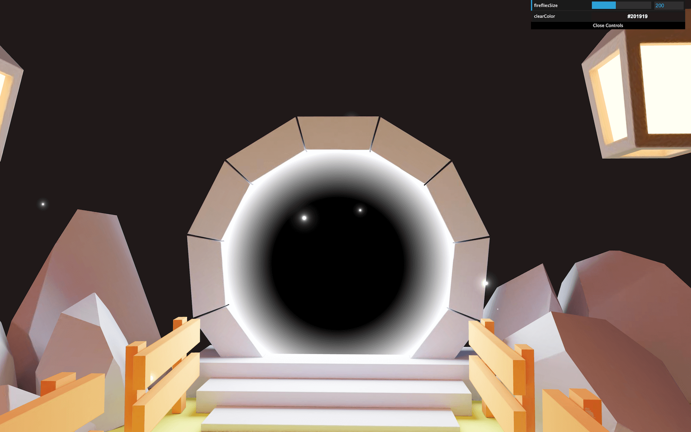
We can now add the outerGlow to the strength and send the strength to the gl_FragColor:
We kind of get the result we want, but unfortunately, the edges aren't perfectly white. This is because the Perlin noise isn't clamped between 0.0 to 1.0. That means the value can actually go below -1.0 and above +1.0 . But, we aren't going to do anything about it because the next step will fix it.
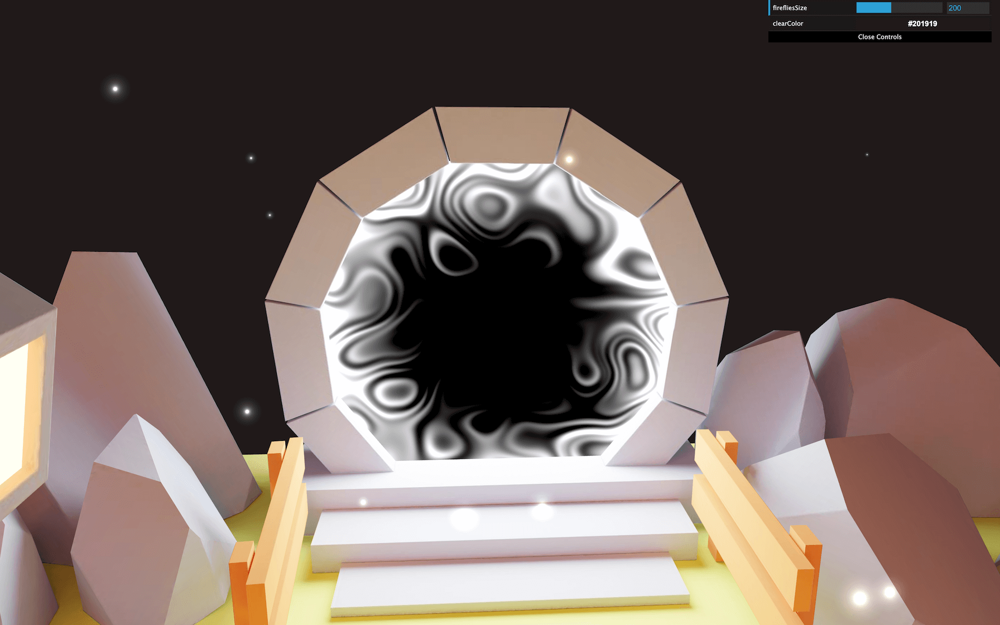
Currently, we have a very smooth pattern, but it's actually too smooth. We want to add some sharpness to it.
Step
To do that, we can apply a step() function to the strength.
The first parameter of the step() function is a limit (also called edge). When the value of the second parameter is above this limit, you'll get 1.0 and if the value is below this limit, you'll get 0.0.
You can try different values for this limit:
We get a nice sharp result, but now it's too sharp.
Instead of replacing the strength with that step() function, we are going to add it to the initial strength. We can also multiply it by a lower value to dim the step effect a little:
And here is our final pattern. As you can see, the edges are perfectly white and we get a good mix between smooth and sharp.
Colors
In this example, we are fine with the black and white result because our portal light was initially white. But, let's add colors in case you went for a different portal color.
In the JavaScript file, add a uColorStart and a uColorEnd uniform with red and blue colors . Use the Color class:
Retrieve those uniform in the fragment shader, mix() them into a color variable using the strength and send it to the gl_FragColor:
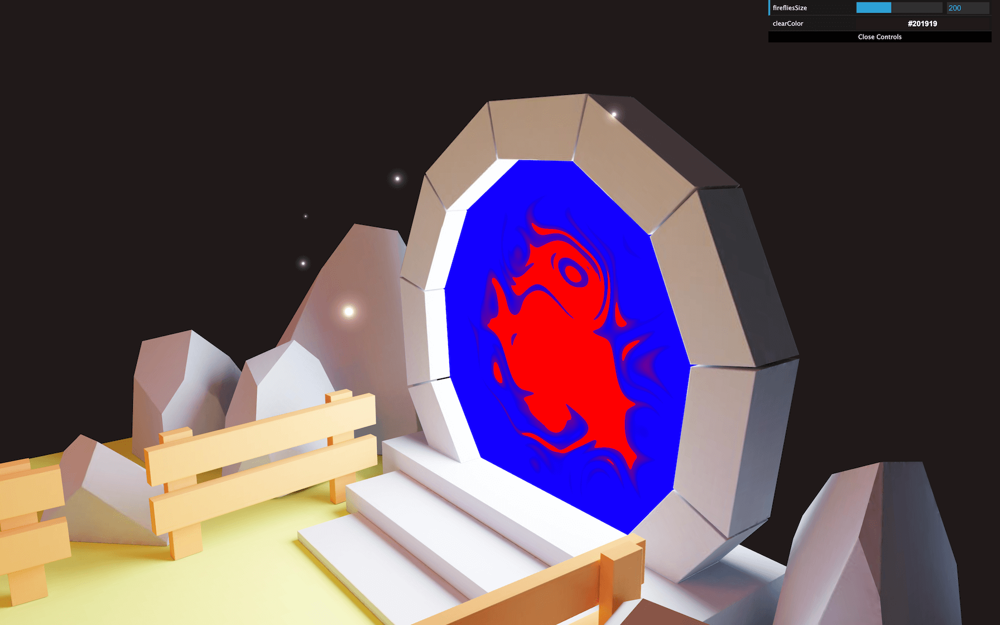
You should get a nice mix between the red and blue.
Let's add those colors to our Dat.GUI. As always, we add them as properties of the debugObject and listen to changes to update the uniforms accordingly:
You can now tweak the colors.
But there is a catch. With some colors like deep blue to orange, you'll notice that you end up with yellow on the edges and we also lose the sharpness we had before:
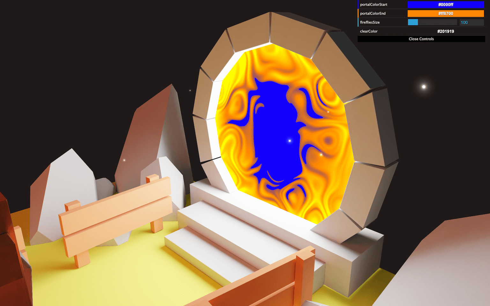
This is because the strength is actually going below 0.0 and above 1.0 which results on the colors being extrapolated. It's not much of a problem with black and white, but it gets messy with some other colors.
To fix that, we need to make sure that the value is clamped between 0.0 and 1.0 by using the clamp(...) function:
Anyway, if you are using the model from the starter, you should probably stick with black and white.
Don't forget to use the debugObject.portalColorStart and debugObject.portalColorEnd in the initial values of the uniforms:
Go further
That's it for our portal scene. Now would be a good time to add more tweaks and maybe more details.
You can obviously try to create your own scene from scratch using all the modeling and baking processes you have learnt. Take your time, make sure to have the proper geometries, and clean UV coordinates. Don't hesitate to share your result on Twitter or in the Discord server.